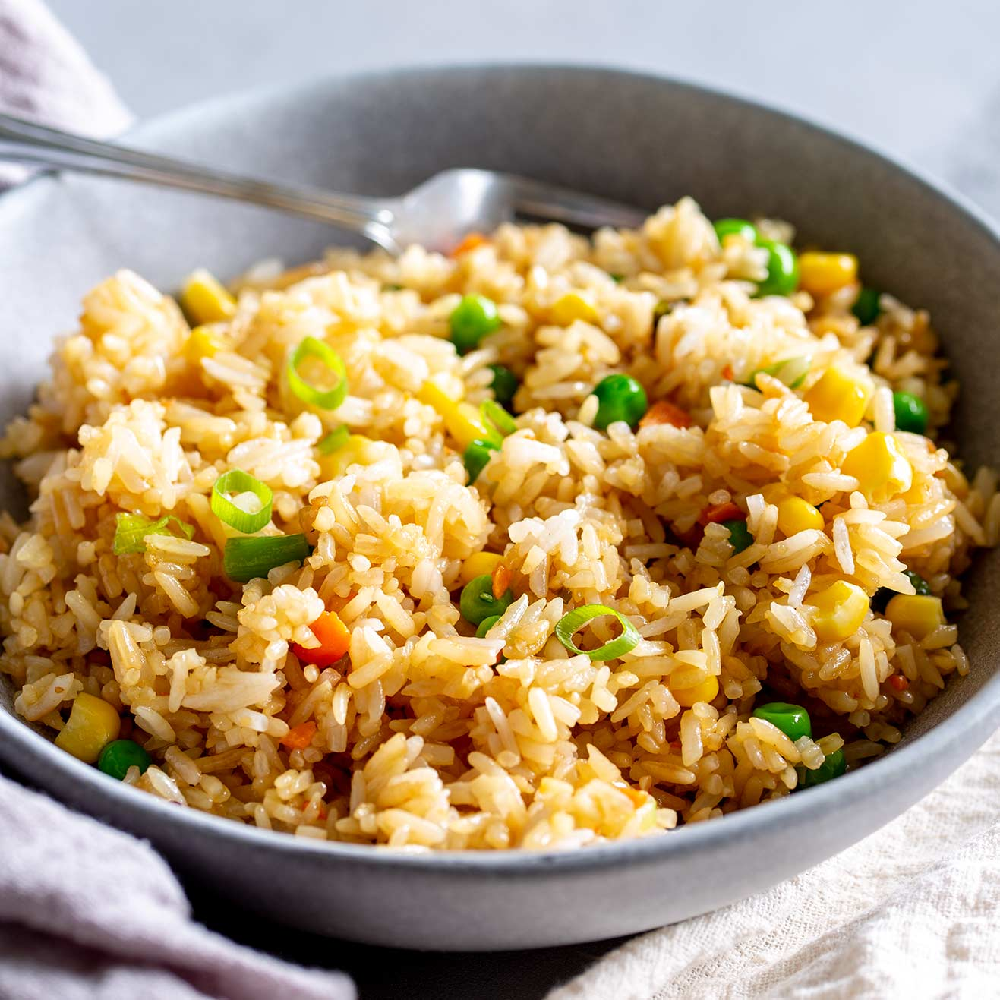

Fired Rice

Description
Easy and quick fried rice dish.
Ingredients
- 4 cups of cooked rice
- 3 eggs, scrambled
- 1 carrot, diced
- 1 green onion, sliced thinly
- 1 cup of frozen peas
- Salt
- 1 Tbsp (14 g) Unsalted Butter
- 1 Tbsp (14 g) Granulated Sugar
- 3 Tbsp (42 g) Soy Sauce
- 1 Tbsp (12 g) White Vinegar
- 3 Cloves Garlic, grated
- 1 Tbsp Ginger, grated
Steps
- Add rice to a rice cooker and let it cook. (Alternatively used leftover cooked rice)
- Make scrambled eggs in a non-stick skillet.
-
In a small bowl, add granulated sugar, soy sauce, white vinegar and whisk together. Add
grated garlic and ginger. Whisk together.
-
In a medium-sized skillet add oil on high heat and then sti-fry frozen peas and carrots.
- Add rice, green onion and sauce
Joshua Weissman's Fried Rice